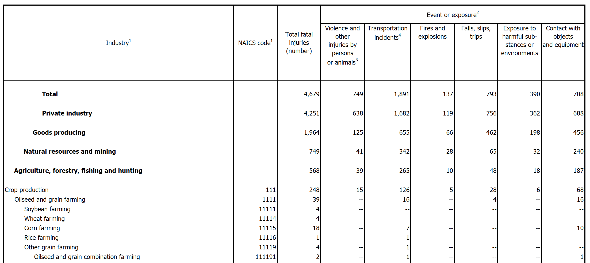

Working with data from the Bureau of Labor Statistics, part 1
Introduction
The Bureau of Labor Statistics (BLS) website has many datasets pertaining obviously
to labor statistics - in particular, the main subjects are:
- Inflation and Prices
- Employment & Unemployment
- Pay & Benefits
- Spending & Time Use
- Productivity
- Workplace Injuries
- International
- Regional Resources
There are lots and lots of data files on the website (it IS a government statistics organization, after all), for any
data junkie to be quite happy with. However, these are
maddeningly horrific and ugly files! While some of the datasets are in relatively clean Microsoft Excel
format, the majority are either contained in tables within PDF files (!), or in easy-to-parse but very cryptic plain text
files.
For the first part of this section, I'll give an example of working with one of the BLS's pdf files. I will investigate
Workplace Injuries, specifically focusing on the number of different types of fatalities in each industry. The primary
file is "cftb0286.pdf", and can be found here, under
"2014 Census of Fatal Occupational Injuries (preliminary data) -
Industry by event or exposure, 2014 (PDF 272K)".
Here is the first page of the 35-page document:

Parsing a pdf in Python (or in any language) is not straight-forward.
A pdf is just a stable, static image that prints easily, and is not meant for text/number extraction.
However, I don't want to print the document - I want the
information in a nice, tidy format, preferably a Python Pandas dataframe! While there are a few python libraries as well as stand-alone websites that
claim to do pdf parsing, I didn't have too much luck with what I tried, with information not getting parsed correctly.
Transforming data from PDF tables to Pandas dataframes
So, I did something (maybe) a little weird. I copy and pasted the pdf file into my favorite text editor (Sublime Text), which
correctly put each row of the table into its own line in the text file. I then saved the file as a normal text file, and then
opened up Jupyter Notebook (formally Ipython Notebook), to do the rest of the data munging and analysis.
def open_file():
with open("fatalities.txt", "r") as ins:
array = []
for line in ins:
array.append(line)
return array
def clean_up(array):
for line_num,line in enumerate(array):
# Remove newline character
line = array[line_num].strip("\n")
if "--" in line:
# Change "--" to 0
line = re.sub("--", "0", line)
array[line_num] = line
return array
def create_df(array):
# Transform data from text to appropriate arrays
industry=[]
naics=[]
total=[]
violence=[]
transportation=[]
fires=[]
falls=[]
exposure=[]
contact=[]
regex = re.compile("[A-Z]")
regex2 = re.compile("[a-z]")
last_industry_name = "hello" # silly initial value
# we need this variable so that duplicate rows don't get added
for line_num,line in enumerate(array):
words = line.split()
linetitle = []
for w in words:
if regex.match(w[0]):
words = words[1:]
linetitle.append(w)
industry_row=' '.join(linetitle)
elif regex2.match(w[0]):
words = words[1:]
linetitle.append(w)
industry_row=' '.join(linetitle)
elif w[0] == "(":
words = words[1:]
linetitle.append(w)
industry_row=' '.join(linetitle)
if industry_row != last_industry_name: # get rid of duplicate rows in pdf
for w_num,w in enumerate(words):
words[w_num]=w.replace(",","") # remove commas in numbers
if len(words) == 7: # does not include NAICS code
industry.append(industry_row)
naics.append(0)
total.append(int(words[0]))
violence.append(int(words[1]))
transportation.append(int(words[2]))
fires.append(int(words[3]))
falls.append(int(words[4]))
exposure.append(int(words[5]))
contact.append(int(words[6]))
last_industry_name = industry_row
elif len(words) == 8: # does include NAICS code
industry.append(industry_row)
naics.append(int(words[0]))
total.append(int(words[1]))
violence.append(int(words[2]))
transportation.append(int(words[3]))
fires.append(int(words[4]))
falls.append(int(words[5]))
exposure.append(int(words[6]))
contact.append(int(words[7]))
last_industry_name = industry_row
else:
# Some kind of error, may have to manually fix
print line_num
else:
pass
# many, many duplicated rows in pdf file
# Create dictionary of arrays
d={'industry':industry,
'naics': naics,
'total': total,
'violence': violence,
'transportation': transportation,
'fires': fires,
'falls': falls,
'exposure': exposure,
'contact': contact}
# Create pandas dataframe object from dictionary
df = pd.DataFrame(d)
cols = ['industry','naics','total','violence','transportation','fires','falls','exposure','contact']
df = df[cols]
return df